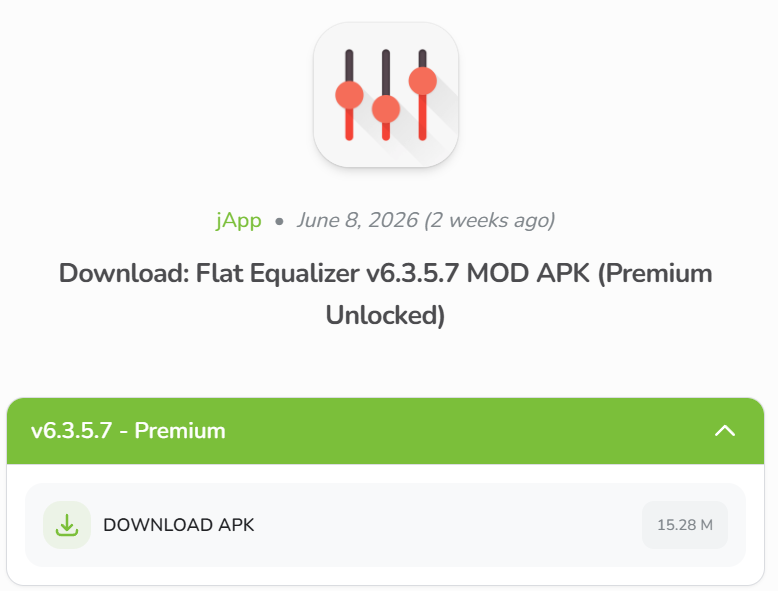

Audio Equalizer
Many people complain about the poor sound quality of BYD vehicle speakers, leading many to replace the original speakers with those from renowned brands in an attempt to improve the vehicle's sound quality. While a valid solution, the replacement is generally not cheap, alters the vehicle's original design, and involves the hassle of disassembling doors and risking damage to other electronic components.
Best used for
People who are more particular about how the car's audio system sounds. Make your music sound better, with deeper bass, without breaking the bank by changing the speaker system.
Compatibility note
This app needs to be running in the background for the equalizer settings to work. It will only work on media apps like YouTube, Spotify, or other local media player. It will NOT work with radio sound or the vehicle's navigation system.
How to install
Obtain the APK from a trusted source and keep a record of the version you are installing. Go to LiteAPK's website and APK file.

Launch the app. Adjust your bass and other audio settings.

Usage tips
This repository is a guidance directory. It does not host APK files and does not guarantee APK integrity, legality, compatibility or safety. Verify sources before installing or distributing files.